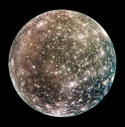

Jupiter's Moons
Planet
Moons
Exploration
Moons

Jupiter's Moon 1
View of the heavily cratered terrain of Callisto's anti-Jovian hemisphere.
Jupiter's Moon 1
View of the heavily cratered terrain of Callisto's anti-Jovian hemisphere.